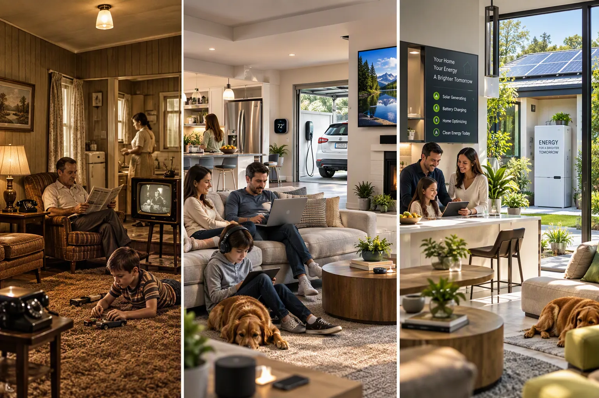

The things we drive change. The technology around us changes. The way we live changes.
Progress Changes What We Need From Electricity.
You Don’t Need Another Solar Pitch. You Need Clarity.
Solar With Philip is designed to help you understand today’s home-energy choices before asking you to make one, including the choice to do nothing yet.
Current information. Clear explanations. Transparent facts. Experienced guidance.
The goal isn’t to tell you what to choose. It’s to help you know enough to choose.

You don’t have to make an energy decision today.
You just have to decide whether it’s time to know more.
START →Simply press Start and let the information flow.